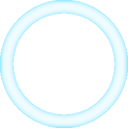

Ксения Ишкина — Утиные истории
90 секунд · три дорожки
Нажимай на нужную дорожку, когда полоска плитки совпадает с линией в области тапа. Длинные ноты удерживай. Звёзды за долю пойманных нот: ★ от 40% · ★★ от 65% · ★★★ от 85%.
Ноты приходят раньше музыки? Сдвинь задержку вправо.
Музыка подождёт